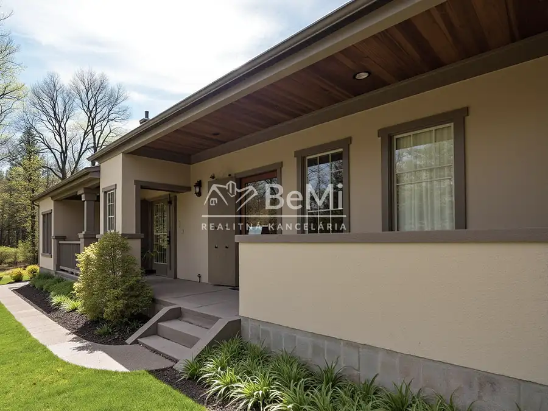
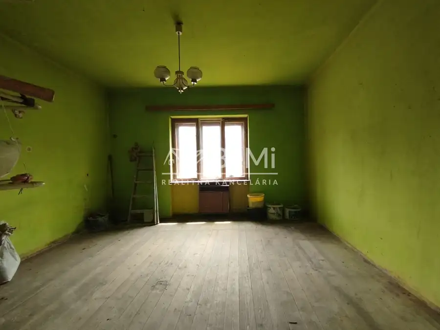
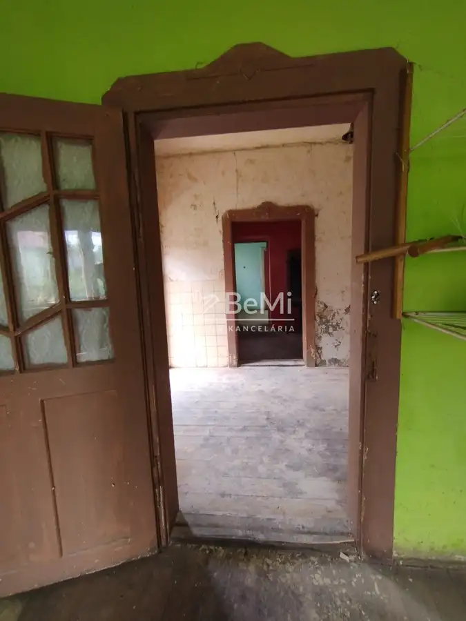
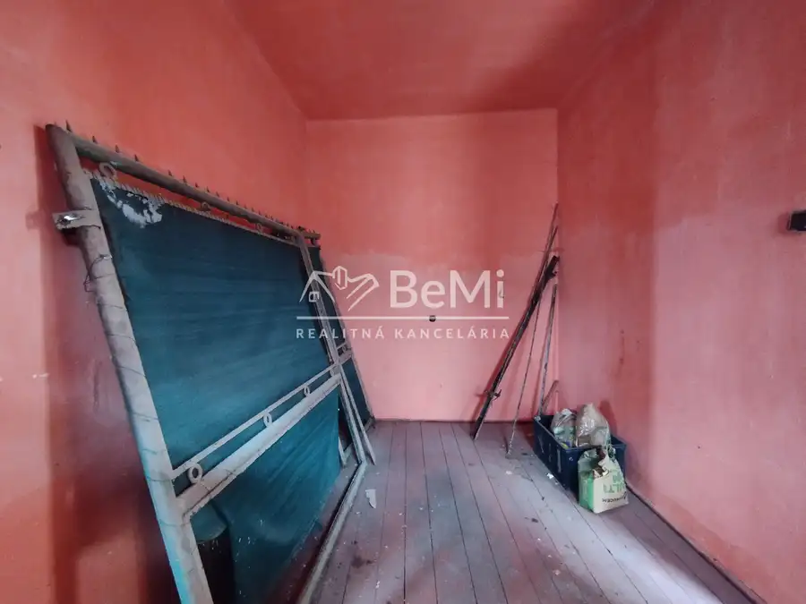
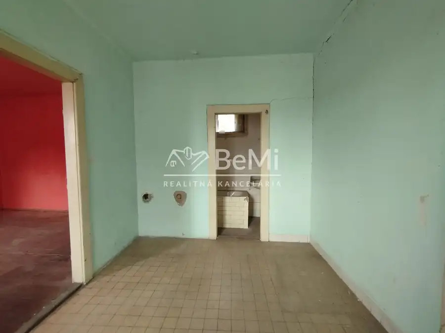
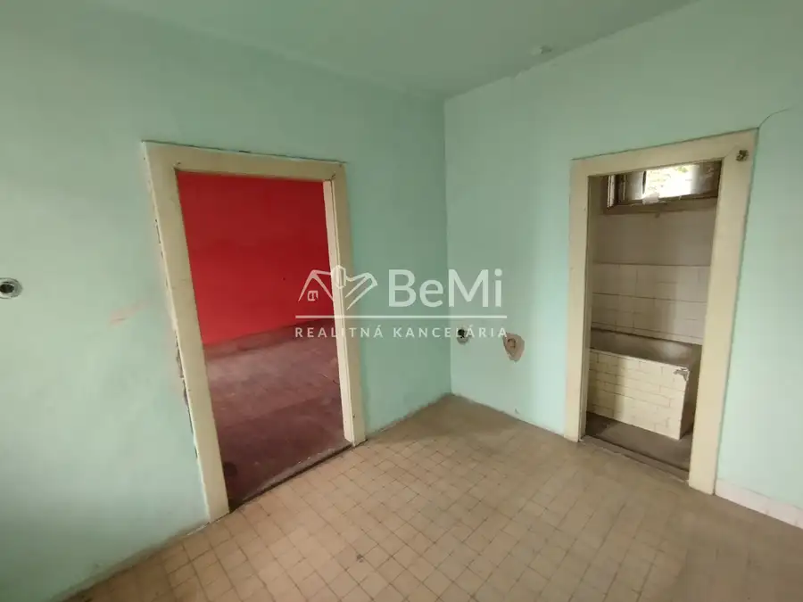

Rodinný dom so záhradou na predaj- Rapovce
Rapovce







- Plocha115 m²
- StavPôvodný stav
- VlastníctvoOsobné
O nehnuteľnosti
ID:206-12-VETOV zastúpení majiteľa Vám ponúkame starší gánkový rodinný dom s dvomi pivnicami , veľkou povalou a menšou záhradou v Rapovciach na predaj.Obec sa nachádza na juhu Slovenska, blízko mesta Lučenec a hraníc s Maďarskom. Obec je dobre známa a navštevovaná kôli jej termálnemu kúpalisku Novolandia. Nehnuteľnosť je vhodná aj na investičné účely, trvalé, alebo víkendové bývanie. Rekonštrukciou domu, môžete získať krásnu, štílovú a hodnotnú nehnuteľnosť v obci, kde sú rozhodne drahšie. Celková rozloha pozemku: 532 m2. Rodinný dom postavený v rokoch 40. tých, má výborné základy, hrubé, suché múry a veľa potenciálu na prerábku. Predná časť domu bola postavená z váľkov a kameňa, zadná z tehál a kameňa. Strecha domu je sedlová, krytina je škrídlová. V dome sú štyri izby, kuchyňa a kúpelňa. Pod domom sú dve veľké pivnice , vhodné aj ako ďalšie miestnosti. V dome bol zavedený aj plyn, využíval sa na kúrenie gamatkami. Dom je momentálne odpojený od elektrickej energie. Voda je zavedená z vlastnej studne, ale pred domom pri ceste sa nachádza aj verejný vodovod, na ktorý je možné sa napojiť.V obci je okrem iného aj škola a škôlka, obchod, obecný úrad, kostol, autobusová zastávka. Susedia sú priateľskí. Obec je vzdialená od Lučenca, kde je kompletná občianská vybavenosť, len pár kilometrov. Autobusové linky sú pravidelné.Nehnuteľnosť je v osobnom vlastníctve, je vysporiadaná a bez tiarch. Kúpa je možná aj prostredníctvom hypotekárneho úveru, s vybavením ktorého Vám radi pomôžeme.Fotografie zrekonštruovaného stavu sú len ilustráciou. Cena nehnuteľnosti: 30.000Dohoda možná.Cena je vrátane všetkých poplatkov realitnej kancelárie, rezervačných a kúpnych zmlúv ako aj podania návrhu na vklad vlastníckeho práva do katastra.Čakáme Vás na obhliadke. Tel.kontakt: 0918678901 (zo zahraničia:+421918678901) email : tothova@realitybemi.sk
Parametre
- Druh
- Rodinný dom
- Dátum zverejnenia
- 15. 09. 2025
- Plocha pozemku
- 532 m²
- Počet izieb / miestností
- 4
- Počet nadzemných podlaží
- 2
- Stav nehnuteľnosti
- Pôvodný stav
- Typ
- Predaj
- Typ konštrukcie
- Zmiešaná
- Vlastníctvo
- Osobné
- Vybavenie
- Terasa, Pivnica
- Vykurovanie
- Lokálne
- Zariadenie
- Nezariadené
- Zastavaná plocha
- 293 m²
- Úžitková plocha
- 115 m²